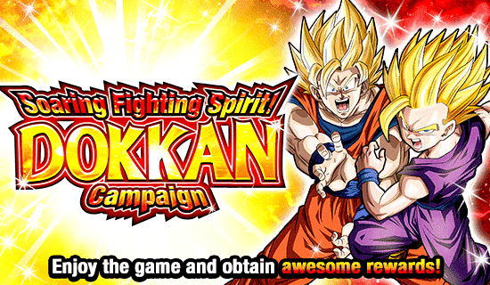
Huh.
Essa Golden Week tem um tema muito hype, mas sei lá, parece que não foi tão hype quanto deveria ter sido.
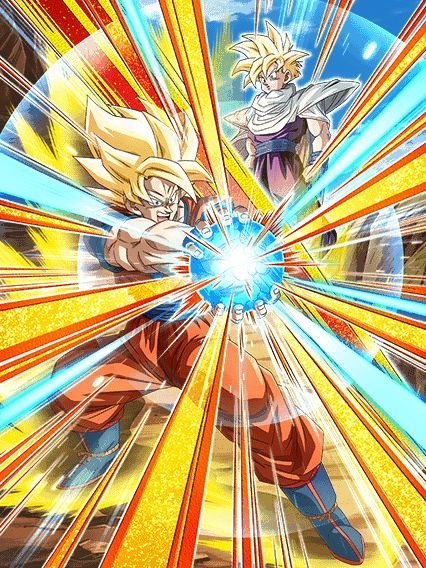
Jogar com esse card é equivalente a jogar segurando uma lista de compras.
Sei lá, esse card tem animações lindas, arte linda, OST boa, mas eles tem tantas condições e coisas pra buildar que cansa usar ele
Vamo começar por algo bem chato, o Goku tem 50% de chance de desvio, mas só depois de dar um super attack, que já é uma mecânica muito chata
Como se não bastasse, essa chance só é de 50% pelos primeiros 5 turnos em que ele aparece, depois cai pra 30%
E acredite, o desvio desse cara é importante pq ele não consegue tankar muito bem não
Mas esse é apenas um dos problemas.. já que esse cara builda 59% de ATK e DEF com 3 desvios, e aí já começa a desgraça, já que 50% de chance de desviar não é confiável, e tão pedindo pra você colocar esse cara na frente da maior quantidade de ataques possíveis
E pra completar, esse cara stacka ATK no super, ou seja, querem que você passe um tempo stackando com ele ainda, sendo que te limitam a trocar pro Gohan em 5 turnos, já que caso não consiga, você só vai ter um card frágil
E falando em trocar pro Gohan, tá ai a pior parte desse card
A condição pra trocar pro Gohan não parece tão ruim.. é só mandar 3 super attacks
Como eu disse, não parece ser ruim, mas só não parece mesmo
O Goku tem absolutamente 0 menções de qualquer adicional na passiva dele, o que significa que caso você não builde o Hidden Potential dele com full adicional (que ainda não te garante nada), ele vai dar 1 único super por turno e de novo, se demorar demais, o desvio dele fica inútil
Mesmo que você dê um super adicional, na melhor situação possível você só vai conseguir trocar pro Gohan no turno 5, e na maioria das vezes você não vai conseguir esse super adicional
Não é que eu odeie o card, mas é que ele tem muitas falhas, fica difícil é defender esses caras
Enfim, o Gohan.
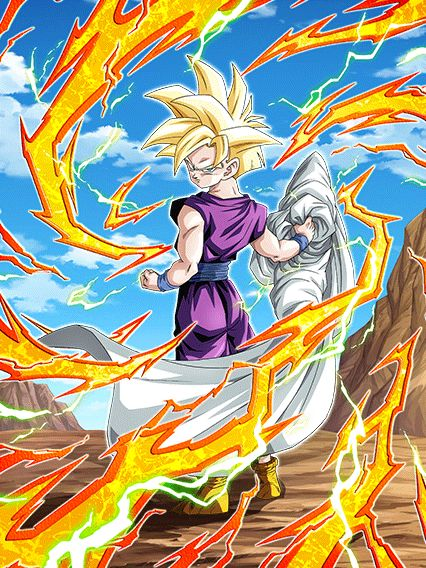
Se o card fosse apenas esse Gohan, seria muito melhor
A "lista de compras" não acaba ainda, o Gohan também tem q buildar
E dessa vez eles te dão 3 turnos pra tomar 6 ataques, e caso você não consiga, você simplesmente não consegue buildar o card
É o seguinte, o Gohan tem defesa ativa por 3 turnos, nesses 3 turnos você tem que levar 6 ataques pra ganhar 58% de ATK, 116% de DEF e defesa ativa permanente
E sim, o Gohan é realmente muito forte buildado e consegue tankar bem, o problema é que esses golpes que ele precisa levar tem que acontecer enquanto ele está com a defesa ativa, então, ou você builda ele muito rápido, ou tem a alternativa de ter vantagem de cor contra o boss, que felizmente conta pra passiva
O Gohan também tem 70% de chance de counterar supers de Ki que eu acho bem legal, já que foi o jeito deles de colocar o SSJ2 em algum canto no card
Mas é, se o card fosse somente o Gohan, seria mais tranquilo de usar, mas como o Gohan demora MUITO pra aparecer (e quando aparece, já tá no final da luta), fica difícil de usar esses caras de forma competente, até pq eles não tem muitos personagens slot 1 pra proteger eles
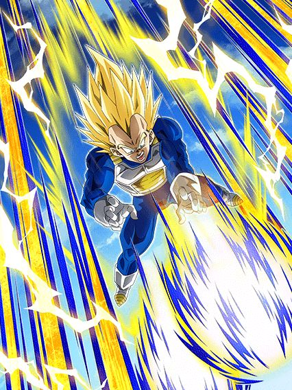
Ele era pra ser um personagem que dá dano, mas ele não faz isso muito bem.
Esse Vegeta faz a mesma coisa que o Trunks AGL que lançou esse ano, o kit dele é lotado de ataques básicos adicionais por algum motivo
Ele lança um adicional nos 4 turnos iniciais dele, lança outro se você pegar 3 orbs, e é basicamente só isso
Depois de 5 ataques feitos, ele ganha 100% de ATK e DEF a mais, e depois de 10 ataques ele fica efetivo contra tudo
Em geral ele só não ajuda muito, já que ele só tem foco em dar dano, mas os stats dele são baixos demais pra isso.
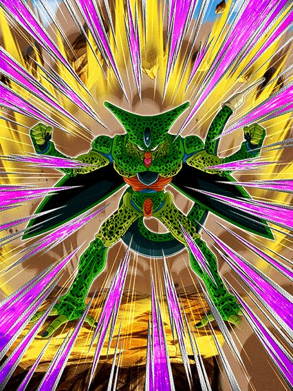
Se ele fosse perfeito logo de cara, seria um top 5 personagens.
Bom, o Cell sofre de problemas similares ao Goku e Gohan, já que ele também demora muito pra chegar na forma mais forte, mas felizmente ele não tem nenhuma condição horrível de transformação
Bom, nessa forma o Cell é bem chato com a quantidade de inimigos, o que é bem triste
Caso tenham 2 inimigos, ele tem mais ATK e DEF e 18% de chance de desvio e crítico, e se tiverem 3 ou mais, ele ganha um pouco mais e fica com 35% de chance de desvio e crítico
É basicamente só isso
Ele também stacka ATK no super attack, que é o interessante pelo menos, mais dano quando ele tiver transformado
Bom, a partir do turno 3, o Cell automaticamente passa pra sua seguda forma
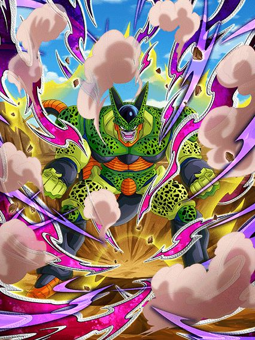
Um pouco melhor.
Agora o Cell tem 17% de chance de desvio e crítico sem restrições e aumenta pra 35% caso tenham 2 ou mais inimigos, o que é bom, já é menos uma restrição pra lista
Mas tirando isso, só aumentaram algumas porcentagens na passiva dele, então em geral ele segue a mesma coisa
E ele ainda stacka ATK, então é.. legal eu acho
Ele passa pra forma perfeita no turno seguinte, e finalmente fica bom
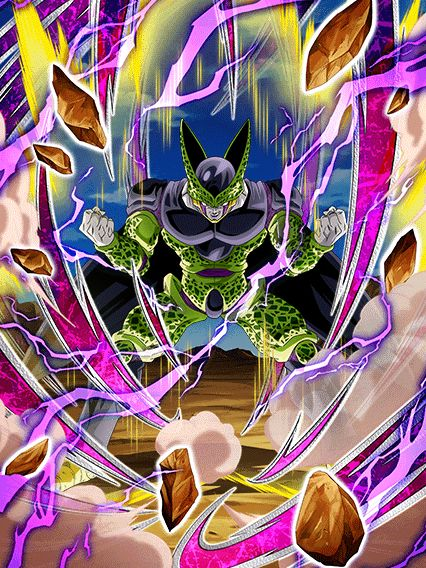
Bom, agora o Cell tem bastante dano, defesa decente e não tem mais restrições de inimigos, então ele finalmente é usável haha
Falando sério, o Cell é um personagem super simples, ele tem dano e defesa, tem 50% de chance de lançar um super adicional se teu HP estiver acima de 50%
E o desvio e chance de crítico dele agora tão em 35% sempre, é basicamente só isso, não tem muito segredo
A coisa do Cell é que ele não tem muitos personagens slot 1 pra ajudar ele, já que obviamente confiar em 35% de chance de desvio não é uma boa ideia né
Como eu disse no começo, se o Cell simplesmente estivesse na forma perfeita desde o início, ele seria um ótimo personagem, mas infelizmente não é tão fácil assim né, que pena
Bom, o Cell tem mais uma transformação, que no caso é o rage mode dele
Você só precisa estar abaixo de 50% de HP pra ativar, então é bem tranquilo
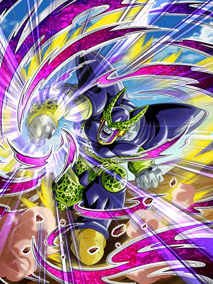
Daninho mediano.
O Cell tem um pouco de Ki e dá crítico garantido, é só isso
E o rage só dura 1 turno e já acaba, infelizmente é bem medíocre, só serve mesmo pra dar um dano a mais e acabou.
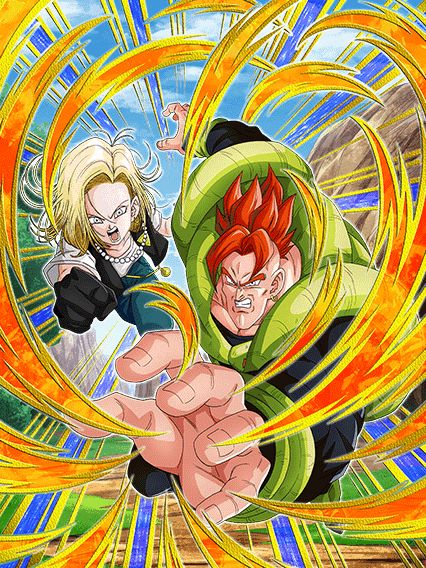
30% de chance.
Esse card é maravilhoso, pode confiar, só se liga
Esse card tem incríveis 30% de chance de ser efetivo contra tudo se tiver um aliado Super Class no turno
E caso seja um aliado Extreme Class, eles tem maravilhosos 30% de chance de terem defesa ativa! Que coisa incrível!!!
Falando sério, esse card tem até um suporte pra geral interessante, dando mais ATK se tiver um inimigo Super Class ou mais DEF se tiver um inimigo Extreme Class, mas não passam muito disso não
Em geral eles tem animações legais e é só isso, não tem motivo pra usar esse card.
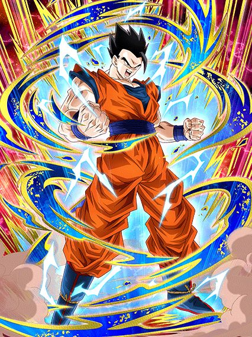
Até que ele é bom sim.
O Gohan tem um suporte muito bom, dando 50% de DEF pra aliados Super Class, e mais Ki e 30% de DEF caso sejam da categoria Entrusted Will
Mas em geral, o fator principal desse cara é ele ter 50% de chance de ter defesa ativa, que normalmente eu odeio, mas pelo menos ele tem uma coisa q ajuda
Caso você consiga a defesa ativa, ela fica ativa por 4 turnos e o Gohan lança um adicional com 50% de chance de ser um super attack, que é bem considerável e pelo menos faz com que todos os turnos com ele se resumam a um cara ou coroa
E o adicional é bom, já que esse cara stacka 50% de ATK por super, então é, dano bom e defesa considerável, bom EZA.
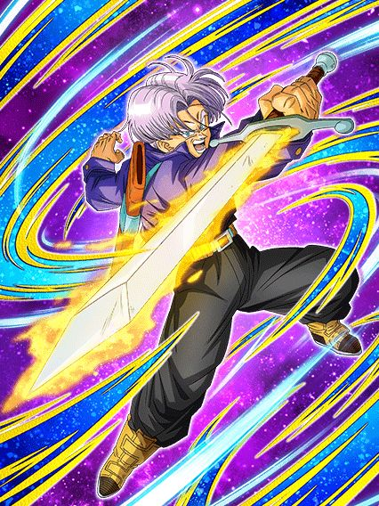
Bro literalmente vive por aliados Saviors.
A passiva do Trunks inteira se resume a isso, ele quer muito aliados Saviors pra tudo
Pra começar, o cara ganha 40% de ATK e DEF por aliado Saviors no turno, então já é um pedaço inteiro de passiva nisso
E aí ele tem uma incrível mecânica de ter 50% de chance de scouter, caso tenha um inimigo Extreme Class e todos os aliados no turno são Saviors, nem um pouco restrito né?
Em geral essa cara é bem inútil, já que Saviors é uma categoria muito fraca que raramente ganha buffs
Uma pena, pq eu acho a arte e animações desse cara bem maneiras até
3 EZAs de personagens F2P foi o que teve nesse Dia do Goku, nada de muito anormal.
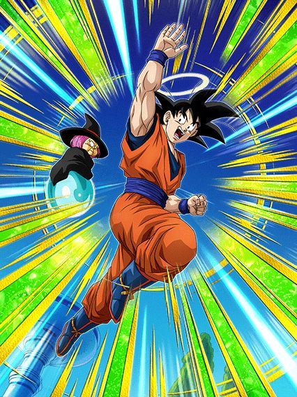
O cara tem o desvio impossível.
Esse cara tem metade da passiva basicamente inacessível até o turno 8, bem chato
A partir do turno 8, esse cara tem 50% de chance de desvio, e caso tenha um Goten criança no time, ele builda 59% de DEF com 3 desvios
Em geral, esse cara até um suportezinho interessante pra Goku Family, mas infelizmente, o desvio não ajuda.
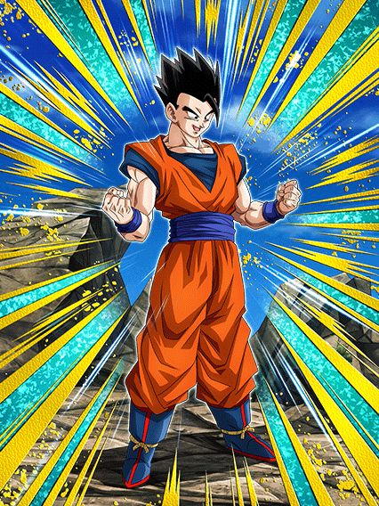
Esse cara dá dano.
O Gohan stacka ATK no super, builda 58% de ATK e DEF com 3 super attacks
E tem até 70% de chance de lançar um super adicional caso tenha outro Goku Family no turno
Em geram ele até é usável pra dar dano, tirando o fato que a defesa dele é podr-
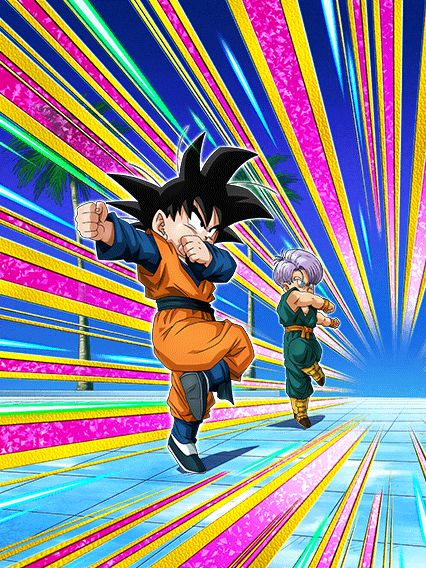
Dos 3, o pior.
O Goten foca em dar suporte, dando 30% de ATK e DEF pra Goku Family e se tiver um Goku anjo ou Trunks no turno, o suporte aumenta pra 40%, o que é legal
Mas né, ele não tem desvio, nem dá dano, aí complica
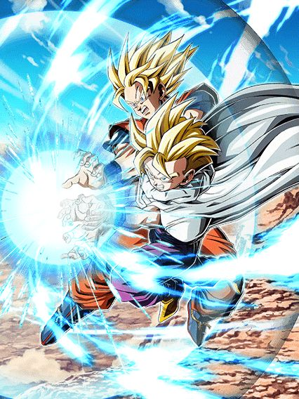
O Dokkan Original antes dos Dokkan Originals.
Esse card foi baseado numa arte do Akira Toriyama de um tempo atrás, devo admitir que é uma ideia bem genial
Esses caras são semi-nukers e tem um monte de 58s e 59s na passiva, mas eles são bem decentes
Fazendo um Ultra Super Attack, esses caras totalizam 177% de ATK e 174% de DEF, isso sem contar os 5% de ATK, DEF e chance de crítico por orb pega, muito forte
Eles não são orb changers, mas pô, eles não estão vivendo apenas pela habilidade de nukar, então tá tudo certo
Eles também lançam um super attack adicional caso estejam acima de 20 de Ki, condição fácil e tranquila de pegar
E falando em condições, tem a active skill deles que uuhh..
Bom, você precisa enfrentar um inimigo que esteja com menos de 59% de HP a partir do turno 5.. o que é bem exagerado e chatão de pegar
Também tem uma condição alternativa, que é você estar acima de 58% de HP a partir do turno 7, mas aí a luta já foi longe demais né
Enfim, caso você consiga, você irá assistir ao Kamehameha Pai-Filho versão 2.0 original
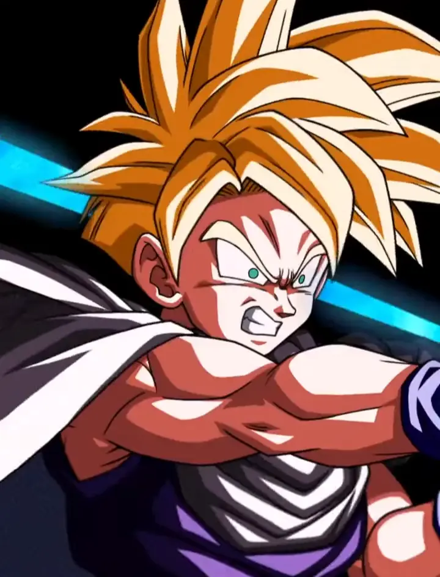
É genial cara, a linha é azul ao invés de vermelha já que dessa vez o Gohan é motivado ao invés de ficar irritado, brabo demais mlk
Os caras da Akatsuki realmente são gênios quando querem ser.
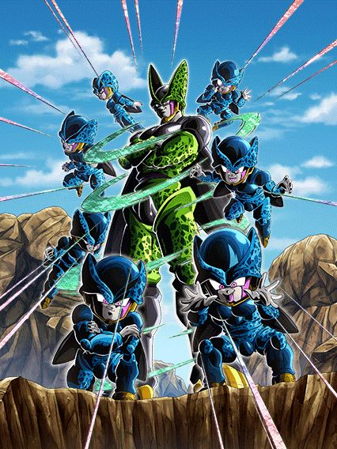
Agora ele tem uuhhhhh defesa..?
Basicamente foi só que o EZA deu pra esse cara, 60% de DEF quando ele faz um Super Attack, e caso ele esteja enfrentando um inimigo apenas e fizer um Ultra Super Attack, a DEF aumenta pra 120% e ele ganha +3 de Ki
É só isso
Sei lá, EZA bem sem sal, mas útil pro World Tournament pelo menos.
Você chegou ao fim dessa página!
Obrigado por ler tudo, e fica a vontade pra ver outras